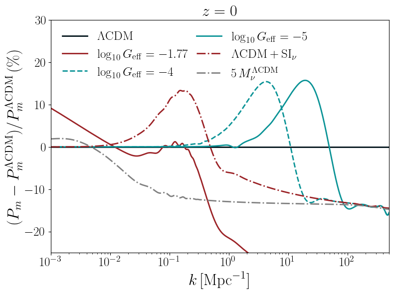

I have always been fascinated by interdisciplinarity and by the possibility of exploring the same topic from multiple perspectives, keeping an open mind and integrating diverse points of view.
This mindset has shaped both my methodology and my way of doing research: to understand deeply how things work, I believe it is crucial to think outside the box, combining tools and expertise from different fields.

Line Intensity Mapping (LIM) surveys collect all incoming photons within a specific frequency band; rather than identifying resolved sources, their observables rely on the statistical analysis of intensity fluctuations across the observed map.